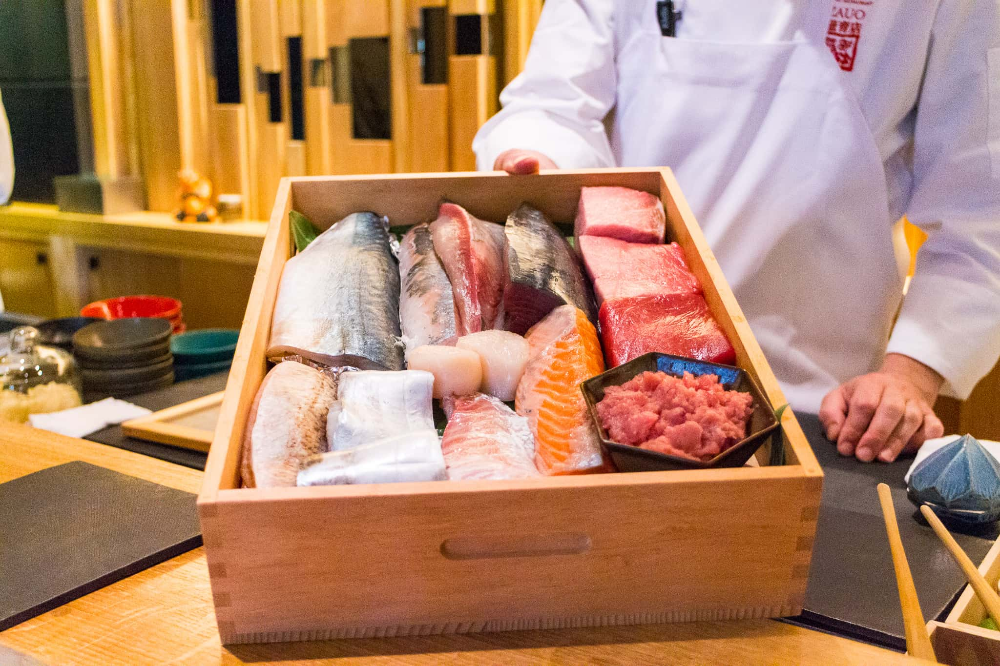

Our restaurant Sushi Wara is a casual sushi spot that's serious about precision, freshness, and
tradition.
We serve dinner five nights a week, offering handcrafted sushi, sashimi, and creative delicious
rolls using only fresh high-quality ingredients.
We cook dishes that we love, and our menu is
rich in history and heritage, taking inspiration from our favourite restaurants in Japan.
We’re proud to offer a curated beverage list including sake, wine, and signature cocktails that pair
beautifully with every dish.
Whether you’re joining us for a quick bite or a full dining experience,
Sushi Wara is all about detail, care, and balance in every plate.
>
Our story
Born into a family that valued food as a way of bringing people together, Yong’s journey began in the
heart of his childhood kitchen, where he first learned the importance of balance, texture, and flavor.
His formal training started in a small sushi shop in Osaka, where he spent years perfecting the art of
hand-pressing nigiri and mastering the delicate techniques of traditional sushi-making. Eventually, he
traveled to coastal towns across Japan, immersing himself in the world of fish markets, learning to
source the freshest seafood with an instinct honed over time.

Our ingredients
Born into a family that valued food as a way of bringing people together, Yong’s journey began in the
heart of his childhood kitchen, where he first learned the importance of balance, texture, and flavor.
His formal training started in a small sushi shop in Osaka, where he spent years perfecting the art of
hand-pressing nigiri and mastering the delicate techniques of traditional sushi-making. Eventually, he
traveled to coastal towns across Japan, immersing himself in the world of fish markets, learning to
source the freshest seafood with an instinct honed over time.
JOIN OUR TEAM
We’re looking for talented bakers, managers, and more to help us grow our business and spread our culture of
craft to new countries and states.